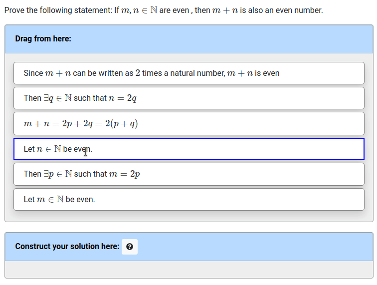

Due to the work of Seth Poulsen, with design input from myself,
Mahesh Viswanathan,
and Geoffrey Herman,
the pl-order-blocks element can now be used to grade
problems where the dependence between the blocks is given by a directed acyclic graph (DAG) structure.
When used of allowing students to construct mathematical proofs by dragging
and dropping blocks, we call it Proof Blocks.
Special thanks also goes to
Benjamin Cosman,
Patrick Lin,
and Yael Gertner,
for being willing to use the development version of Proof Blocks with their students, giving us helpful
feedback along the way.
Here is an example Proof Blocks question like one might see in an introductory proofs course:

The question.html that would generate this question would contain:
<pl-order-blocks answers-name="proof1" source-blocks-order="random" grading-method="dag" solution-placement="bottom">
<pl-answer correct="true" tag="1" depends="" > Let $m \in \mathbb{N}$ be even. </pl-answer>
<pl-answer correct="true" tag="2" depends="" > Let $n \in \mathbb{N}$ be even. </pl-answer>
<pl-answer correct="true" tag="3" depends="1"> Then $\exists p \in \mathbb{N}$ such that $m = 2p$</pl-answer>
<pl-answer correct="true" tag="4" depends="2"> Then $\exists q \in \mathbb{N}$ such that $n = 2q$</pl-answer>
<pl-answer correct="true" tag="5" depends="3,4">$m + n = 2p + 2q = 2(p + q)$</pl-answer>
<pl-answer correct="true" tag="6" depends="5"> Since $m + n$ can be written as $2$ times a natural number, $m + n$ is even</pl-answer>
</pl-order-blocks>
Our paper about Proof Blocks, Evaluating Proof Blocks Problems as Exam Questions, was awarded an Honorable Mention for best paper award at this years International Computing Education Research Conference. In the paper, we show that Proof Blocks problems give a substantial amount of information about student knowledge while being easier than written proof problems. Stay tuned for further research with Proof Blocks!
To try Proof Blocks, see the Proof Blocks demo question. .
For more information, see the pl-order-block documentation.
Want to help make PrairieLearn better? It's open source and contributions are welcome!